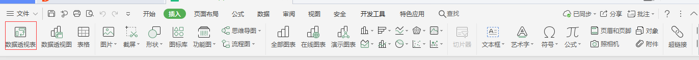

数据透视图(data pivot picture)
可使用数据透视表汇总、分析、浏览和呈现汇总数据。数据透视图通过对数据透视表中的汇总数据添加可视化效果来对其进行补充，以便用户轻松查看比较、模式和趋势。借助数据透视表和数据透视图，用户可对企业中的关键数据做出明智决策。此外，还可以连接外部数据源（例如 SQL Server 表、SQL Server Analysis Services 多维数据集、Azure Marketplace、Office 数据连接 (.odc) 文件、XML 文件、Access 数据库和文本文件），创建数据透视表，或使用现有数据透视表创建新表。
关于数据透视表
数据透视表是一种可以快速汇总大量数据的交互式方法。可用于深入分析数值数据和回答有关数据的一些预料之外的问题。数据透视表专门针对以下用途设计：
以多种用户友好的方式查询大量数据。
分类汇总和聚合数值数据，按类别和子类别汇总数据，以及创建自定义计算和公式。
展开和折叠数据级别以重点关注结果，以及深入查看感兴趣的区域的汇总数据的详细信息。
可以通过将行移动到列或将列移动到行（也称为“透视”），查看源数据的不同汇总。
通过对最有用、最有趣的一组数据执行筛选、排序、分组和条件格式设置，可以重点关注所需信息。
提供简明、有吸引力并且带有批注的联机报表或打印报表。

文字内容 (md info supported)
- 支持以 PDF 格式导出文稿
- 改进 Cmd 渲染算法，使用局部渲染技术提高渲染效率
- 新增 Todo 列表功能
- 修复 LaTex 公式渲染问题
- 新增 LaTex 公式编号功能
这是选项卡 1 呵呵哈哈哈哈哈哈
这是选项卡 2 额。。。
这是选项卡 3 哇，你找到我了！
Do not just seek happiness for yourself. Seek happiness for all. Through kindness. Through mercy.